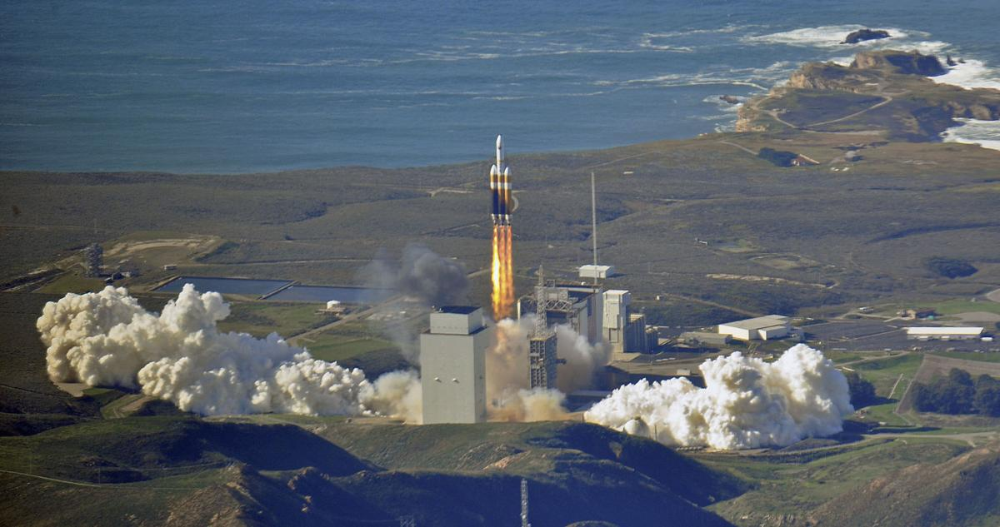
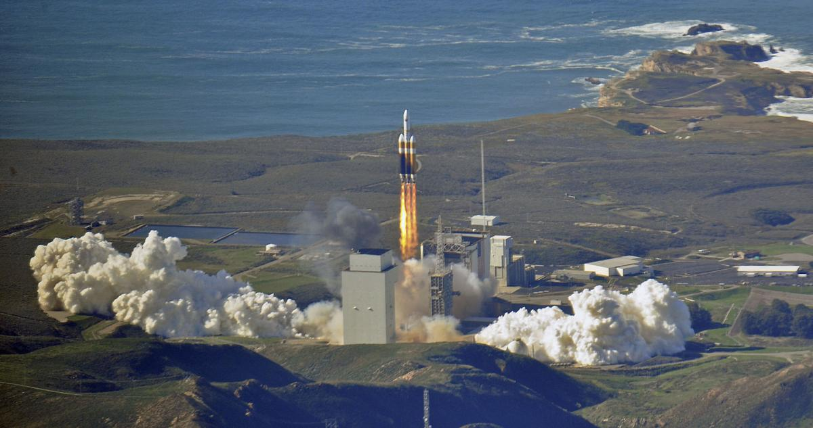
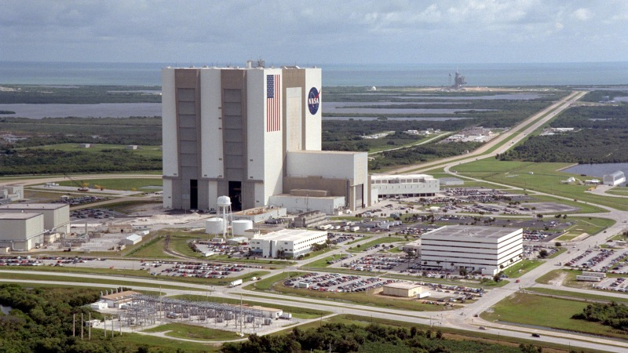

Info base
locatie:Details:
Vandenberg Air Force Base is 2016 gebouwt. De bouw duurde 1 jaar. De base is voor het eerst gebruikt voor de SAOCOM 1A missie in october 2018.
Vandenberg Air Force Base is 2016 gebouwt. De bouw duurde 1 jaar. De base is voor het eerst gebruikt voor de SAOCOM 1A missie in october 2018.
Als de weerstomstandigheden goed zijn kleurt de achtergond groen.
Temperatuur:Landing Zone 1 is de eerste landings base van SpaceX. Op deze base heeft de eerste landing van de Falcon 9 plaatsgevonden.
Als de weerstomstandigheden goed zijn kleurt de achtergond groen.
Temperatuur:Of Course I Still Love You is een landings schip. Het schip is in Louisiana in 2015 gebouwd. Het is een nieuwere versie van het landings schip Just Read the Instructions.

Als de weerstomstandigheden goed zijn kleurt de achtergond groen.
Temperatuur:Just Read the Instructions is een landings schip. Zijn eerste missie was het ophalen van de eerste trap van de Falcon 9. De landing van de Falcon 9 Flight 29 is geslaagd op dit schip.

Als de weerstomstandigheden goed zijn kleurt de achtergond groen.
Temperatuur: